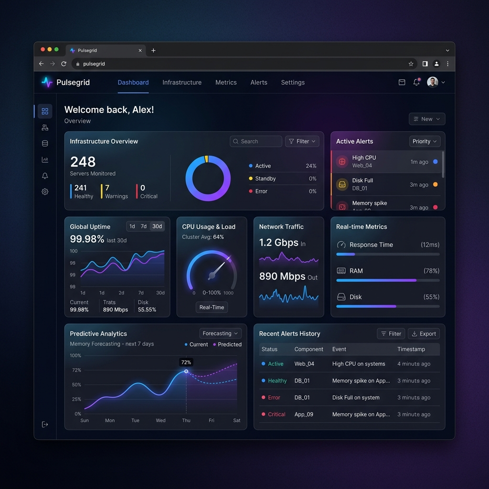

Infrastructure monitoring
Real-time clarity for complex systems.
Pulsegrid turns thousands of scattered metrics into one clear, living picture of your infrastructure. So your team can catch problems before customers ever notice them.

Why teams choose Pulsegrid
Everything you need to stay ahead of incidents
Built for engineering teams who would rather prevent outages than explain them.
Real-time monitoring
Live metrics from every service, updated every few seconds, with zero configuration sprawl.
Smart alerts
Get notified about what matters, not every minor blip alerts learn your system's normal patterns.
Predictive analytics
Spot capacity issues weeks before they become outages with trend-based forecasting.
Team collaboration
Shared dashboards, inline comments, and on-call handoffs that keep everyone in sync.
By the numbers
Trusted by infrastructure teams everywhere
0
Servers monitored
0
Platform uptime
0
Teams onboard
0
Incident response